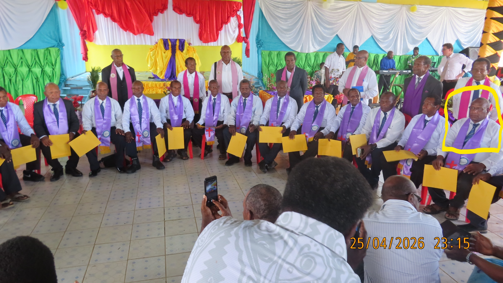
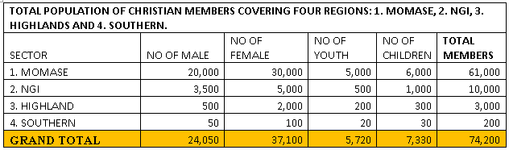
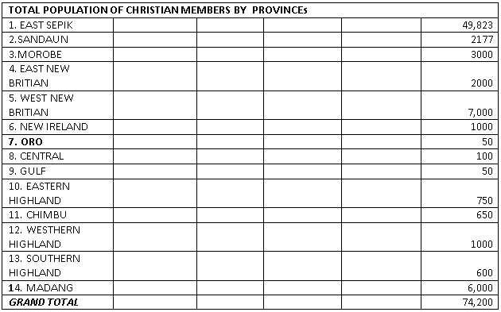
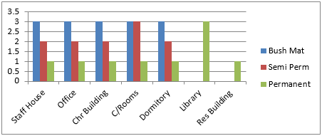

South Sea Evangelical Church of Papua New Guinea

Click the link below if you want to browser in to Education Department or Health Department.
HEALTH DEPARTMENT |
EDUCATION DEPARTMENT |
South Sea Evangelical Church of Papua New Guinea Development Plan
Message from the Head of the organization
The SSEC National Church Development Plan 2013–2022 then to 2022 - 2026 and now from 2026 - 2032 ,is our first plan ever since celebrating 50 years Anniversary in 1998, remembering, acknowledging and commemorating the success of the labour of our pioneer missionaries and fore fathers. Within that period to date has taught us many lessons and increase our knowledge and capacity. Assessing through the state of our church where we were, where we are and where we should move forward. This has now enabled us to develop this plan.
This plan is an important roadmap for the SSEC citizens, as we enter a new era of spiritual and physical growth. Reversing the trend from some strength and failures from 50 years ago. Our vision with this plan is to transform Church System to achieve healthy, prosperous and transparent Church that upholds Christian Principles and values ensuring: affordable, accessible, and quality holistic church service delivery for our entire rural majority that we are serving.
This plan will strengthen all levels of church systems, and improve spiritual growth and church service delivery for the people in rural and urban catchment areas. The Plan also provides challenges to improve, transform church systems to produce Christian members to uphold and practise Christian Principles and Values, and provide quality Church services through innovative approaches supporting church system development, and good governance at all levels for efficient and effective church service delivery.
I look forward to work with all our Christian members, partners, churches, missions and other stakeholders; working together we will improve and provide quality Church services spiritually and physically.
I welcome and endorse this SSEC National Church Development Plan2022–2026 and 2026 - 2032 as a demonstration of our commitment and urge all SSEC Members to commit ourselves, work together, and maximise the resources available, both financial and material to strengthen all levels of church system, and improve spiritual growth and church physical service delivery for all our SSEC serving people and others in Papua New Guinea
Referent and National Superintendent Pastor Charlch Nausap

SSEC National Superintendent PNG
Forward Message from the National Secretary
This is the first ever South Sea Evangelical Church 0f Papua New Guinea National Development Plan since celebrating 50 years Anniversary in 1998. Fifty years after our first jubilee Anniversary celebration we are now making history by using the framework that was set in our policy and constitution which has given Directive Principles to develop SSEC National Development plan.
The goal of this Plan reflects the need to concentrate on strengthening all levels of church system to improve, transform, and provide quality Church services through innovative approaches supporting church system development, and good governance at all levels for efficient and effective church service delivery for our entire rural majority that we are serving.
This plan is an important roadmap for the SSEC citizens, as we enter a new era of spiritual and physical growth reversing the trend from some strengths and failures from 79 years ago. Our vision with this plan is to transform Church System to achieve healthy, prosperous and transparent Church that upholds Christian Principles and values ensuring: Affordable, accessible, and quality church Service delivery through holistic approach.
I therefore believe that this National Church Plan is truly the ‘SSEC people’s vision’. This ten year Plan sets the overall direction for our church to attain our dream to be a transform healthy, prosperous and transparency Church that upholds Christian Principles and values and provide quality holistic church Service delivery for all serving citizens, after next three - ten years of Church plan implemented, I believe SSEC will have contributed towards achieving PNG Vision to be Smart, Wise, Fair, Healthy and Happy Society by 2050. I urge every church members, stakeholders and partners to understand this plan and take ownership for implementation.
Above all, I thank God for his inspiration in the development of this plan and pray for his continual guidance as we endeavour to implement this plan forward.
Thankyou
Referent and National Secretary Pastor Saimon Minigamba

National Secretary SSEC PNG
Acknowledgement Message from the Chairman
This is our first ever SSEC National Plan 2022 - 2027 formulated with the support and commitment of many individuals. On behalf of the people of South Sea Evangelical Church of Papua New Guinea, I acknowledge and express our deepest appreciation to our fore fathers, who had the foresight and led this church through this generation which had given the chart of our church history. They were wise and able SSEC Leaders of Papua New Guinea.
We are indebted to so many of our late distinguished leaders like BanabasKe-ein, Samson Hapeli, RonisBati-ien,Rev John Mark Awok, Rev Mathew Apnanji Rev Simbri Kudimia, and others for their wisdom and leadership. Others are still serving the church today such as Rev Judah Akesim, Rev GaiasTapi Rev Jonathan Mumbe, Rev, KaiasYarbange, Rev Gabriel Markus, Rev Ariel Ham, Rev Sifas Wakitihieng, Rev Joshua Lukas, Rev John Naku and Elder Joshua Kes, John Ickinus, Papa Kaos, David Maulengenand many more.
We also acknowledge previous leaders who served as church leaders serving the term of office term by term up to date as those mentioned above including Joe Cornelius, Nick Antonimbi, David Bilyeme, Tommy Motawa and Mathew Naimo from Momase region, Rev Michael Kendi, Rev Michael Sowaka, KoreWai, David Kwandai, Ben Pia, JoesphGunni and Anton Bakani from NGI Region.
These leaders had visions and courage and took the first steps to formalise the birth of our Church. They were the people who conceived the vision and laid the framework in the church Goals and Directive Principles which are enshrined in our Church Constitution and policy. We thank God for their leadership and their decision making which had brought significant impacts on our church system and the lives of the people and has brought this church organization this far.
Firstly, I would like to thank and acknowledge the SSEC National Fellowship leaders who had a meeting in Madang on the 25- 29 July, 2024 gave the overwhelming approval for the church to develop and make available a ten year national church plan setting a road map for the development and growth of the church.
The National Church Plan Steering committee is acknowledged for the efforts it has made in discussing the outcomes, strategies and activities to achieve church objectives. The steering committee under the Leadership of Mr NicksonSamblap as National Church Plan Facilitator consisted of the following : Mr Tommy Motawa - Deputy leader: Mr Mack Yarbange - Chairman: Mr Simon Sakias –Treasurer: Mr Kevin Kaisman – Secretary: Rev Eriel Ham – Elder: Mr Mathew Naimo – National office: Mr Vincent Aiwan- District Associations: Mr Simon Minigamba – District Associations: Mr Nick Antonimbi – Principal, Mr John Judah and Mr Sam Arkrag – Bible College staff: Mr Jobson Jessie and Mr Peter Kolli – Projects; Miss Rita Yaluwangi, Miss Lois Apsalai and Evelyn Judah – Women’s department: Miss Lina Moses and Miss Carol Noah – Missions department. The National Church plan steering committee also acknowledges the following mothers (wives ) Mrs Glenys Motawa, Mrs Julie Yarbange, Mrs Jenny Ham, Mrs Maria Naimo, Mrs Dorothea Antonimbi, Mrs Lista Arkrag and Mrs Esther John for their contributions and support towards the meals and other aspects for the whole planning and development process of the plan at Brugam, Maprik, East Sepik Province, Momase Region. The acknowledgement is also made to the SSEC Health Service for the availability of the Training centre and Brugam Bible college classrooms for venues and the department’s for contributions of computers and generators for the planning and development of the plan.
The following New Guinea Island church leaders are also acknowledged for their support and contributions to the National Church plan at Gavuvu, Hoskins, in West New Britain. Mr Anton Bakani, Superintendent, Mr KoreWai, Associate Superintendent, Mr Ben Pia, Secretary, Mr David Kwandai, Chairman, Mr FredyMakoko, Associate chairman, Rev Michael Kendi and Rev Michael Suaka (Elders) Mr Edward Wangiwan ( Supporter) and Mr Jonathan Kialo (Principal,Gavuva Bible College ) Mr Joseph Gunni (NBPL, Manager ) The wife Mrs Betty Pia for hospitality provided to the planning team subcommittee involving in consultative process at Gavuvu, in West New Britain Province. There are many others who contributed throughout the extensive planning and consultative process from the local, district and regional church level from around Papua New Guinea. The Elites of SSEC are acknowledged also for their support and contribution especially in the technical and proof reading aspect of the plan.
The preparation of this plan financially has been made possible by the Momase regional Office, each church Department and interested individuals.
The National Church Plan 2012 -2021 is prepared to guide the church in improving and achieving the church capacity building program, strengthen system of operation and promote good leadership and governance.
I am pleased to say that the response was very impressive, as leaders, Christian members, friends, church members educated elites, our past serving missionaries and partners came forward and described this as first ever plan in which they would like to see and support.
Furthermore, I wish to thank many of our people who have steadfastly prayed for a development of this plan. This is a testimony of their combined loyalty to translate the thinking and the aspirations of our people into a directional path that will guide this church forward over the next 10 years.
Above all, I thank God for his inspiration in the development of this plan and pray for his continual guidance as we endeavour to implement this plan forward
Referent and Pastor Mack Yarbange

SSEC Chairman
3. Executive Summary
Our Fore-fathers without formal education took up the leadership from the missionaries and led the Church through for the last 50 years with the wisdom of God. They had expressed a desire for the new generation in this church to witness’ improvement and change in the church system to achieve spiritual maturity and provide effective church physical service delivery, to enable our people to attain self-fulfilment. This desired intention of seeing improvement and changes has strived current Church leaders to come up with this plan as a roadmap to guide and a way forward to achieve the desired intention expressed by our forefathers.
Our Current Church leaders saw Church as an important partner to government service delivery; the church had tried its best to provide what it can. However, progress has not been as significant or as widespread as hoped. Especially in rural areas, where the rural majority of Papua New Guineans lives. There is still a demand to improve deterioration in Spiritual ministry, Education, Health and economical service delivery.
This has driven us to develop this church plan with a vision to improve and transform church system to produce Christian members to uphold and practise Christian Principles and Values, and provide quality Church services through innovative approaches supporting church system development, and good governance at all levels for efficient and effective spiritual, social and economic service delivery.
To achieve that vision, we have set objectives and strategies from the identified key result areas in this plan which we believe after implementation, will contribute towards achieving our church goal and vision and also will contribute towards achieving our government plan as recently outlined by our Leaders Vision 2050 for PNG to ‘be a Smart, Wise, Fair, Healthy and Happy Society by 2050.
This plan calls for all SSEC Members, Partners, stakeholders for collaborate efforts to implement strategies aim at achieving our goal of Strengthened all levels of church system, and improved church service delivery for our rural majority that we are serving.
4.1 Background

South Sea Evangelical Church of Papua New Guinea emerges from the work of an Australasian Mission namely South Sea Evangelical Mission (SSEM) that had its headquarters in Sydney, Australia. Beginning in Bundaberg, Queensland where Miss Florence Young the founder of the church begin the work among the sugar industry labourers recruited from the islands of the Pacific in the year 1880 and beyond. The work extended to the Solomon Islands in 1904 then to Papua New Guinea in 1948.
South Sea Evangelical Church (SSEC) was established and operated in Papua New Guinea for over sixty (70) years since 1949. It became first indigenous national church on the 23rd of July 1973 and was registered as South Sea Evangelical Church Inc.Registration No 5-92, dated 14th July 1975 with the Government of Papua New Guinea. Its registered office is located at Brugam, Maprik District in East Sepik Province. SSEC has its Articles of Association, the constitution and policy guidelines and its structure of operation like any other churches in Papua New Guinea. SSEC is a member church of the Evangelical Alliance of Papua New Guinea as well as the South Pacific and the world as a whole.
The main focus of the mission then to the church is on Salvation in Jesus Christ with, health education and civilization as substandard ministry as the main focus. It believes in the Bible being the infallible word of God that can make changes and transform the lives of people spiritually, socially, mentally and physically. The church endeavours to grow and nurture the values as worship of God, love for God and fellow men and being faithful stewards in providing genuine services and witness to the people. It aims to build a Christian society based upon the principles of justice, peace, equality and prosperity and that its members should be healthy, educated, wealthy and faithful evangelical worshippers of God, Jesus Christ and the Holy Spirit.
The church has grown from strength to strength over the last 50 years as an indigenous independent entity with over 30 District Associations, 600 local churches located in the four regions of Papua New Guinea with 74 000 congregation members. The Bible Training level for the Pastors and leaders which started from a three months program since 1962 at Brugam and Yakrumbok has expanded to a two years advance certificate courses offered now at Brugam in Maprik, East Sepik and Gavuvu , Hoskins in West New Britain Provinces while Diploma and Degree programs are received at CLTC, Banz, WHP. SSEC being in partnership with the Government of Papua New Guinea has also provided the social sector services as education, health, youth and women apart from Bible and evangelistic ministry. There are well over 50 schools institution and 18 health facilities mainly in Momase and New Guinea Island regions and the focus to extend such services to other provinces of Papua New Guinea as well. For the first time SSEC has come up with this ten year plan which is fair and based on service level needs and caters for all aspects of its work in witness and service to the people.
4.2 Purpose and Role of the National Church Plan
The standards and systems of civilization had changed to global requirements in areas of information and communication technology, education, infrastructure, health, politics, socio economic and mission movement. Therefore, this National Church Plan was conceived to provide guidelines and strategies to improve the state of the church to meet the challenges of growing modern standards and systems of civilization and achieve the desired outcome for an authentic evangelical Christian church locally, nationally and globally.
This National Church Plan is to provide a road map to improve church system capacity for the development and progress in all aspects of the church programs and social services delivery as indicated in the 10 years with five years interval for review that is also in alignment with the (MTDS), Vision 2050 Strategic Plan and other related Plans as PNG DSP 2010 -2030 targeting to achieve Papua New Guinea’s vision that is smart, wise, fair, healthy and happy Society by year 2050.
The SSEC policy and Constitution mandates the National Church Plan as the governing policy document for this organisation. This is the first ever National Church Plan for South Sea Evangelical Church of Papua New Guinea since 1975 as National Church.
The SSEC National Church Plan also provides and defines the policy directions and priority areas for investment within this church and its church members and other stakeholders both private and public. In this way it can ensure the efforts of all players (Members and non-members and other stakeholders) combine to reverse this church organisation‘s deteriorating indicators and improve better outcome.
Following extensive analysis of the current state of church and its services, the directions and priorities described within this National church Plan emphasise a focus on the most efficient and evidence-based strategies will be required to meet and achieve the targets and eliminate deterioration, and improve church system and its services to an acceptable level. Priorities must be set for investments and development efforts. The goal of this Plan reflects the need to concentrate on strengthening all levels of church system and improved, transform, and provide quality Church services through innovative approaches supporting church system development, and good governance at all levels for efficient and effective church service delivery.
4.2 Guidance for Church Members and Church leaders
The first and foremost members of the National Church Plan are Christians from local churches to the leaders serving in various level of church system including stakeholders who are involved or associated with SSEC.
The Plan provides the direction in their work and determines the objectives, priorities, and expected results. Therefore, every church members and workers can and must take action now,within the level of their own roles, as to achieve set strategies at all levels for efficient and effective church growth and service delivery.
4.3 Guidance for Decision Makers and Politicians
Major decisions on mobilising and allocating resources for the priorities in this plan are made at different districts and provinces, where the establishment of the churches are. Every decision to allocate resources deviates from the priorities. This church plan is taking a risk that may increase capacity of the church system to deliver effective and efficient delivery of services to rural communities that we serve or remain as we are and decreasing capacity to deliver effective service. Every resource in terms of fund counts. Therefore, the commitment and support of our political leaders are crucial. As Church leaders in different level of church system in various districts of provinces need to advocate for the priorities identified in the Plan and hold our political Leaders, partners and stakeholders accountable for improving capacity for church system as to deliver effective and efficient delivery of services to rural communities that we serve.
1.4 A Plan for All Players in the Church System
The key to successful implementation of the National Church Plan lies in the ownership of all Christian members, leaders of the different level of church systems, church departments and stakeholders and all must understand priorities of the each main program being set in this plan to take forward.
An extensive process, time and effort has been undertaken to examine the current state of the church and church services and had identified prioritise areas for improvement. This process involved representative from all level of church system, as both Momase and NGI Regional office, church districts, church departments, SSEC Educated elites around the Country, our serving expatriated missionaries, partners and stakeholders who associated with this church organization. The consultation process is described in more detail in Annex #?
The development of the SSEC National Church Plan was endorsed by SSEC National Executives council and coordinated by the SSEC Momase and NGI Regional Office executives with the task force team from SSEC Momase Regional departmental heads and staff in the Planning Division of the SSEC Church.
5. Linkage between the Church plan and Government of PNG and International obligation
5.1 Direction from Key Government Documents
The SSEC National Development Plan 2013–2022 has been developed to embrace framework provided by key Go PNG policy documents. The Vision 2050 of the Government of PNG describes where we see ourselves as a nation in the next forty years — ‘we will be a Smart, Wise, Fair, Healthy and Happy Society by 2050’. This mission recognises the importance of basic services: Therefore, SSEC National plan after implementing will help contribute towards making PNG to be ranked among the top 50 countries in the UN Human Development Index by 2050, creating opportunities for personal and national advancement through economic growth, smart Innovative ideas, quality service and ensuring a fair and equitable distribution of benefits in a safe and secure environment for all PNG citizens'.
The PNG Development Strategic Plan (PNG DSP) 2010–2030, developed by the Department of National Planning and Monitoring (DNPM), is linked to and guided by the National Vision 2050. The PNG DSP links the principles and focus areas of the Vision 2050 and provides policy direction and sector interventions with clear objectives, quantitative targets, and baseline\indicators. Both documents emphasise that long-term planning needs to be embraced to ensure fundamental improvements in service delivery. Therefore, SSEC National Plan has been designed with its goal and strategies linked to our government plan to ensure that the church is on a track that will help contribute towards the achievement of the related policy objectives set out in the PNG DSP.
Under Partnership policy Framework between the Government and the Christian Churches in Papua New Guinea. It emphasise on Partnership Commitments, that is to developed in a spirit of mutual respect, responsibility and accountability to service delivery, as the Government and the Christian Churches, as partners committed to initiate a process of coordination and consultation aimed at jointly improving the delivery of basic services and exploring new opportunities of joint action to promote Integral Human Development in Papua new Guinea. Therefore, this first ten year plan is formulated as a road map for this church as a guide to implement strategies of it goals that had been align with government plans aiming towards helping our government contributing towards achieving its 2050 vision plan.
This means that at the completion of the period covered by this ten-year Plan and the one following it, the church will have contributed towards achieving key targets set in the PNG DSP by year 2030. By the time a further two ten-year SSEC National Plans are implemented, the church will have contributed invaluably to help make Papua New Guinea a ‘Smart, Wise, Fair, Healthy and Happy\Society by 2050'.
Table1: Linkage between the Church plan and Government of PNG
Church plans alignment with government Vision 2050 Seven Pillars
| Vision 2050 Seven Pillars | SSEC Plan Linkage (Key Results Areas) |
| 1. Human Capital Development, Gender, Youth and People Empowerment | Youth, Women’, Children’s ministry, Strengthening Partnership, Missions |
| 2. Wealth Creation | Agriculture, Rural Building Supplies, Workshop, Guest House Commodity Sale and Marketing, Furniture |
| 3. Institutional Development and Service Delivery | Health, Education, Theological Institutions, |
| 4. Security and International Relations | Strengthen Church System, (Rural Police set up as Security) Strengthening Partnership |
| 5. Environmental Sustainability and Climate Change | Agriculture, Health, Environment &Conservation |
| 6. Spiritual, Cultural and Community Development | Theological Trainings, Women, Youth, Children’s Ministry Ministry, Missions Ministry, Strengthening Church System |
| 7. Strategic Planning, Integration and Control | Improve Management and administration |
Table 2: Church plans alignment with Millennium Development Goals (MDG)
| Millennium Development Goals (MDGs) | SSEC Plan Linkage (Key Results Areas) |
| Goal 1: Eradicate extreme poverty and hunger Target 1.A: Halve, between 1990 and 2015, the proportion of people whose Income is less than one dollar a day | Agriculture, Church Business Arms |
| Goal 2: Achieve universal primary education Target 2.A: Ensure that, by 2015, children everywhere, boys and girls alike, will be able to complete a full course of primary schooling | Provision of Education Services. Children Ministry |
| Goal 3: Promote gender equality and empower women Target 3.A: Eliminate gender disparity in primary and secondary education, preferably by 2005, and in all levels of education no later than 2015 | Women work, Youth, Provision of Education Services. Children Ministry |
| Goal 4: Reduce child mortality Target 4.A: Reduce by two-thirds, between 1990 and 2015, the under-five Mortality rate | Provision of Health services Mission ministry |
| Goal 5: Improve maternal health Target 5.A: Reduce by three quarters, between 1990 and 2015, the maternal Mortality ratio 5.2 Proportion of births attended by skilled health personnel Target 5.B: Achieve, by 2015, universal access to reproductive health | Provision of Health services, Women’s work , Mission ministry |
| Goal 6: Combat HIV/AIDS, malaria and other diseases Target 6.A: Have halted by 2015 and begun to reverse the spread of HIV/AIDS | Provision of Health services, Women, Youth, Theological training, Missions |
| Goal 7: Ensure environmental sustainability Target 7.A: Integrate the principles of sustainable development into country Policies and programmes and reverse the loss of environmental resources Target 7.B: Reduce biodiversity loss, achieving, by 2010, a significant Reduction in the rate of loss Target 7.C: Halve, by 2015, the proportion of people without sustainable Access to safe drinking water and basic sanitation | Agriculture, Environment and conservation |
| Goal 8: Develop a global partnership for developmentTarget 8.A: Develop further an open, rule-based, predictable, non-discriminatory Trading and financial system Includes a commitment to good governance, development and poverty Reduction – both nationally and internationally | Strengthening partnership Improve Management & Leadership and Governance Strengthen Church System and Governance |
6. State of our Church
6.1. Overview of Church profile
Organizational profile will give brief information as we don’t have capacity to set up proper data base to collect sufficient and accurate information. However, this has been a concern and has been taken up in this plan for improvement.
Map Below indicates the establishment and the vision for new provinces to establish mission work by this organization.




6.1. The Spiritual Aspect
6.1.1 Background
God was leading the mission (SSEM) inland during the months of coastal patrol in Wewak. In July 1949, Ken Griffiths and Ken Finger chartered a small plane that took them to the dangerous and recently opened Dreikikier airstrip. This was the quiet beginning of a new spiritual invasion and formation of an indigenous national church which God is raising in Papua New Guinea from the years of burdened prayers and sacrifices of the brethren in the Solomon Islands and the Mission in Australia who earlier in 1948 sent Ken Griffiths for survey and reporting. The timing was right for the sowing of the seed of love, hope and grace from the word of God because the people in Papua New Guinea were devastated and recovering from the oppression of darkness of Tambaran cult spirit worship as well as the Japanese invasion of world war 2 in Asia and the Pacific region from 1942 - 1944. God was in the making of a new people of power and praise that would move in his Spirit to glorify his precious name in all to do according to his will on earth as it is in Heaven.
The beliefs and worship of Spirits has been rooted deeply into the lives of the people here evident in Tambaran cult and other pagan practices and worship that had prepared the hearts of the people and made it alot more easier for the missionaries to convey and sow the seeds of the message of love, grace of God and salvation in Jesus Christ. The fire burns rapidly and conquered many souls into God’s eternal Kingdom within the first 20 years of Missionary activities. Jesus said ….”I will build my church, and the gates of hell shall not prevail against it…………………….” (Mathew 16: 18)
He was saying his people, the church would not die out and it would be well and alive –warm and caring body of believers striving to serve God, do his work and support each other.
The Mission between 1949 and 1973 had established 20 stations and airstrips for coordination and supervision of Pastoral responsibility, schools and medical clinics for service delivery and also set up workshop for vehicle repair, furniture and agriculture for the Momase region while in New Guinea Island region also did the same.
Meanwhile the same fire was set ablaze in the NGI Region by the Sepik settlers who migrated to own oil palm industry in Kimbe, West New Britain Province. The Survey of the possibility to work there was done by Joshua Kess, BanabasKein and Peter Jost the Missionary after the request from the settlers was received by the Sepik Council in February of 1977. By June 1977 the pastors and evangelists from Sepik with their families were sent to do pioneer work among the oil Palm settlers of West New Britain. The work extended and 5 more stations were established as Gavuvu, Bialla, Asarim, (WNBP) Rabaul (ENBP) and Aviamb (WHP) for the NGI region.
The church has grown from strength to strength over the last 50 years as an indigenous independent entity after the mandate given by the Mission for self-determination to the church on the 23rd of July 1973, with over 31 District Associations, 600 local churches located in the four regions of Papua New Guinea with 60 000 congregation members.
Doctrinal Statement
Every SSEC members shall agree, accept and uphold these doctrinal statements as
6.1.2 GOD
We belief that there is only one God. He is a trinity: God the father, God the son and God the Holy Spirit. Mat 3: 16-17, Mat 28: 19, Gen 1:26, Gen 11:7, He created and keeps all things seen and unseen. Gen 1:1,
6.1.3 THE LORD JESUS CHRIST (God the Son)
We belief in the Lord Jesus Christ as God and only begotten son. All things are his and all things were created by his power. John I: 1-3. John 17:5, Col 1:16. He is truly God. God the father sent him into the world and became man. Phil 2:6-7, His mother was a virgin and she bore him by the power of the Holy Spirit. John 1:4, John 14:9
6.1.4 GOD THE HOLY SPIRIT
We belief the Holy Spirit is also God. He has honour and power and glory the same as God the father and God the son. John 14:16-17, Mat 3:16, 1Thes 4:8, Eph 4:30
6.1.5 SATAN
We belief that Satan has his mind, will and feelings. By his own power he has made people fall into sin and he tries to weaken and destroy the faith of man who belief in Jesus Christ as Lord. Gen 3:1-15, Mat 4:1-11, Luke 4:1-13.
6.1.6 JUSTIFICATION
We belief that upon repentance and faith, God forgives, forgets sin and gives everlasting life to all who are truly believing that Jesus died to take away sin and that He rose again from the grave. Rom 10:9-10, John 3:16. The blood of Jesus, God’s son, cleans us all from sin. 1John 1:7, 1Peter 1:18-20, People who truly belief in Jesus will obey His word. John 14:6.
6.1.7 HOLINESS OF LIFE
All true believers must rejoice because the Holy Spirit is able to make our hearts pure and clean by the power of the blood of Jesus Christ and the work of God. John 17:15-19.
6.1.8 THE GIFT OF THE HOLY SPIRIT
We belief in the present day operation of the gifts of the Holy Spirit, as recorded in I Corinthians chapters 12, 13 and 14 and Romans 12: We declare to our SSEC Christians that they should seek to earnestly to receive these gifts of the Holy Spirit. These gifts will strengthen the faith of Christians so that they might be conducted according to the word of God. 1 Corinth 14:1.
6.1.9 JESUS WILL COMES AGAIN TO TAKE THE CHURCH
We truly rejoice as we wait for our Lord Jesus Christ who will come again to receive his church. Then the Lord will come from Heaven and those believers who have died will rise first………….. 1 Thessalonians 4:16: Rev 20:6.
6.1.10 Sacrament
SSEC followed the Word of God and keeps two sacraments
6.1.10.1. BAPTISM IN WATER
We belief Christians are required to be baptized in water in the name of God the Father, God the son, and God the Holy Spirit. In baptism, a Christian should be immersed in water only once. This baptism is the sign of our death, burial and rising again with our Lord Jesus Christ………. Matt 28:19-20, Acts 10:48, Romans 6:4-5.
6.1.10.2. COMMUNION
We as SSEC Christian members must take the Lord’s Supper as he commanded it. He said, you do this to remember me. Luke 22: 15-20, 1Corinth 11:23-26.
6.2 Functions of the church
SSEC is a church denomination consisted of believers in the Lord Jesus Christ having one purpose that is witnessing and serving people towards happiness in this life now and continuing into eternity in Christ Jesus. The work comprises of the six functions
6.2.1 SSEC is a worshiping community – The body of the believers in God, Jesus Christ and the Holy Spirit worshipping together. The God commanded obligation to every believers………. (Exodus 20:3)
6.2.2. SSEC is a servant community – The body of believers who are called into the servant hood service faithfully serving each other and others as well in the spirit of love and humility………… (John 15: 1-17)
6.2.3. SSEC is an evangelistic community – The body of believers who are called into the mandate of the great commission of Jesus Christ by evangelizing the world with the gospel of Jesus Christ ……….. …………. (Mathew 28: 18-20)
6.2.4. SSEC is a fellowship community – The body of believers who are called into the sharing of blessings, be thy spiritual, social or physical together promoting unity in the body of Christ….. (Acts 2: 42-47)
6.2.5. SSEC is a Teaching Community – The body of believers who are reading, studying, learning and knowing and teaching others on the truths of the word of God,..................(2 Timothy 2 :2)
6.2.6 SSEC is a healing community – The body of believers providing medication, counselling, prayer, and comfort to the sick, oppressed and unfortunate people………….(Mathew 25:35- 36)
6.3 Evangelization and church planting
The work propelled from the mandate taken from Jesus great commission to his disciples telling them “Therefore, go and make disciples of all nations baptizing them in the name of the father, and of the son and of the Holy Spirit and teaching them to obey everything I have commanded you. And surely I am with you always, to the very end of age. (NIV)…..Mathew 28: 18-20 How beautiful are the feet of those who bring the good news. ……… (Romans10:14-15)
6.3.1 Reflection on where Good News came
From 1949 to 2026 is exactly 77 years, the missions and church operated in Papua New Guinea and provided the various ministries of witness and services to the people. Geographically our people are scattered living in the rugged terrains, plains and valleys, rivers and swamps, islands and coastal villages and hamlets and vary in languages and cultural lifestyle. Reaching the unreached people with the word of the gospel of Jesus Christ was a challenge. Under extreme conditions as no pay, medical and education allowances, retirement benefit and poor transport, communication and accommodation, the missionaries and indigenous man and women laboured to sow eagerly, evangelized and planted churches
SSEC as a church between year 2000 and 2025 had sent local missionaries to overseas fields on short and long term ministry with the Mission agencies as Operation Mobilization, Pioneers and others. Though the exercise was expensive the church faithfully maintained the contracts made with the agencies. There is a lot to be done to improve and strengthen the mission system and governance for effective implementation of its objectives.
6.4 The trials and shakings
The church has not only enjoyed growth, blessings and expansion in the last 70 years of its existence, ministry and service delivery but had encountered some trials and shakings from the power and kingdom of darkness.
6.4.1. The Yaliwan and his Pelli association movement
In the early 1970s this cult movement sprang up in Yangoru of East Sepik province with the promises of material prosperity had lured up to about 40 % of the Christians in SSEC churches. Some repented and returned to Jesus Christ while others stayed on with the lie and lost their place for eternity with God.
6.4.2. The New life bilongyumiolgeta (NLBO)
This movement founded by Charles Mewala of Arkosame in Sandaun Province also a cult movement that started in 1982 attracted some more people into the similar promises of material prosperity but the Yaliwan movement was fruitless and had become a learning experience to the church members so not many joined the movement.
6.4.3. The controversial Michael Maleau’s Movement
In the early 2008 this was the testing especially for the Bible Theologians and spiritual leaders. The church has seen a minor split in theological interpretations of the Bible regarding the manifestation of the presence of God. Despite the testing the church still remained united and progressing as before.
6.4.4. The TOD Movement
This was the most recent testing especially, in the early 2018 this TOD movement sprang up in Maprik the birth place of SSEC in East Sepik province among the leaders and the church members. With the promises of material prosperity had lured up to about 70 % of the Christians in SSEC churches.
Praise God that every precious gold has to go through the refinery process, the church has stood firmly and has come out as fine pure gold, all glory to God alone.
6.5 Spiritual Growth
The individual and corporate worship, prayer, fellowship, preaching and encouraging each other is active in the church as well as outreach and church planting ministries. The church to feed on the truth of the word of God for the spiritual health depends on the Bible knowledge and interpretation of the pastors either trained or lay worker.
Bar Grapg

The graph shows the overall church life for SSEC Christian members in Papua New Guinea. There are about half (50%) of the population who are weak and help is
needed in terms of prayer, counselling, teaching the Bible truths as well as improvement in administration and logistical support to the pastors.
The active Christian statistics has declined by 20% between 1994 -2012. Resently between 2012 - 2027 the statastics of active christians declined by 20% again.
Factors affecting this drop are suggested as follows.
1. False Teaching in the church
2. Poor conditions of Pastors
3. High level of illiteracy
4. Poor planning, coordination and supervision of pastoral ministry
5. Lack of Bible knowledge and teaching
6. Personal Commitments
7. False Promise of material prosperity
7. Figure#:2 Limitation and Expected Outcome
No
Limitation
Expected Outcome
1
Little education level (Illiteracy)
- Improve and strengthen education system and capacity.
2
Poor medical service and benefit
- Improve and strengthen Health system and capacity.
3
Poor communication and transport system
- Improve and strengthen communication and transport system and capacity.
4
No pay and allowances
- Improve governance and financial system and capacity
5
Lack of management and leadership ability and commitment
- Improve on governance and training system
6
Shallow Bible knowledge
-Improve on Bible training and leadership capacity
5. Information and Communication Technology
Background
The standards and systems of civilization had changed to global requirements in areas of information and communication technology, The process which SSEC has
dwelled on from hand written to type writer had taken nearly 50 years or so for the church to catch up with the computing system for written communication while
verbally mode was communicated through VHF Radio inter connected with other churches, denominations, missions and line agencies with the CRMF based in Goroka, EHP.
Both modes of communication was sufficient in their times but were slow and time consuming for written work. Radio sketch program though was distance effective
especially for rural areas but not many people having access to it, little is conveyed according to time schedule and repair is always a hurdle and expensive.
Concerns
The church has made some good progress with the introduction of telephone and mobile phone services. The computing aspect is a problem because many pastors
and leaders are computer illiterate. Those who have knowledge of and can use computer do not have access to a computer for they could not afford to buy them and
because of these short coming the church could not store electronic files, sent fax or emails and provide accurate data base of information and execute proper
plans and project documents as well as improving on the administration and management capacity.
Information and communication system using the latest technology in the church needed a lot improvement and efficiency therefore strategies to achieve this
concerns is contained in this National church plan under the key areas identified for each church programs.
6. Transport
A. The Mission Era
Between 1948 and 1975 the missionaries were fully staffed at various positions either for leadership or evangelization and church planting and providing
technical support to full time field staff. Mobility at that time was firstly difficult only reaching by plane to constructed airstrips. The Missionary Aviation
Fellowship (MAF) was actively engaged to serve the missionaries.
The introduction of roads and bridges minimized some difficulties of walking which brought in bicycles, motorbikes, tractors, boats and vehicles for various
purpose and ministries. Repair shops were created and local personals employed to work alongside with the missionaries. Mr Gabriel Kumbili of Albinama was the
first trained mechanic the missionaries had prepared. He is still faithful in the work.
By year 1990 there was a decline in the missionary staff for general ministries while few stayed on for specialized field. The church also saw a decline in the
use of air, water and land transport system as well.
The missionaries left one at the time and left some conditioned vehicles, motorbike or boats to the church. As well as the medical staff for emergency purposes
left some vehicles as others had done.
B. The church Era
The church had relied on private vehicles to do its work and ministries when the missionaries left. The Church health services continued to help and improved on the
transport system while the church main administration and the entire church system struggled and opted for the hire of private vehicles.
The aircraft services also declined due to MAF making adjustments to its routine as a result of financial constrains affecting the organization. Our church
rural population could not afford to pay for the return airfares from their destinations because of very low cash flow experienced so many airstrips were closed.
The river and sea people have used motorized canoes and dinghies instead of aircraft services
The current transport constrains still existed for about 90% of our church operation system while the 10% were privileged to receive support from the Government
through the District support Grant, Thanks to the Member for Maprik, Hon Gabriel Kapris for the heart to the church for the donation of 5 Toyota land Cruiser
vehicles to the church in his district in 2012. This has very much improved the mobility of the church administration system and operation for the Momase region.
But recently all this vehicles are gone, due to road condition and poor management.
Concerns
Mobility is a major hick up for church to effectively carry out its work of witnessing the gospel of Jesus Christ or deliver basic social services. Airstrips
have been closed, good condition roads to link up the rural and isolated areas of this nation is lacking and unpredictable there for the Government has to be
serious in this concern to minimize the difficulty faced by the church and people as a whole.
The capacity of transport for the church is inadequate. The church relied heavily on walking for rural communities.
7. Economic Activity
The church mainly sustained its financial expenditure through the support from Christians either from charity support or general offerings and contributions.
Members of the church are taught and encouraged to support financially so that the objectives of the church are achievable. The 60 000 members are obligated to
contribute K 10.00 per head annually toward the church budget. It is consolidated into the general account.
The constrains affecting the church administrative and operating system and ministries and service delivery is the low cash income faced by about 60 % of our
rural population. This has been a continuous major problem affecting the church members to honour their financial obligation and thus needed the critical attention
of the Government to build better roads and bridges for the members to sell their cash crops.
In the New Guinea Islands region the oil palm industry, copra, cocoa, fish and vegetables market economy had made some impact to the church revenue but is
slowly declining perhaps for non-active members or other unknown interest.
The Mission (SSEM) from the start ventured into such business activity but ceased due to reasons only known to them. The remains for such facilities as
Balif workshop built in 1960 and star project in 1972 is an example.
The church however maintained the remaining projects as Balif Furniture, Ilahita saw mill, Brugam workshop, Rural Building Supplies (Formally Self-help)
and Wewak Hill Guest house, until the problems of management and land issue had Balif furniture and Ilahita saw mill project closed. Others were maintained but
cash flow level was low due to the poor economic condition faced.
It is also envisaged that the church should venture into socio economic activities so that its profits are consolidated into the church budget. The church is
reviewing and adopting the general policy to accommodate such revenue activities to contribute to strengthen and improve the church finance system capacity.
An officer should be appointed to provide leadership as Business manager to align and manage all the various business into one system.
8. Infrastructure
The buildings provided accessibility for conducive working, learning, worship and recreation atmosphere for all program activities of the church.
Figure 7
8.1. -Buildings

The graph shows the overall church life for SSEC Christian members in Papua New Guinea. There are about half (50%) of the population who are weak and help is needed in terms of prayer, counselling, teaching the Bible truths as well as improvement in administration and logistical support to the pastors.
The active Christian statistics has declined by 20% between 1994 -2012. Resently between 2012 - 2027 the statastics of active christians declined by 20% again. Factors affecting this drop are suggested as follows.
1. False Teaching in the church
2. Poor conditions of Pastors
3. High level of illiteracy
4. Poor planning, coordination and supervision of pastoral ministry
5. Lack of Bible knowledge and teaching
6. Personal Commitments
7. False Promise of material prosperity
7. Figure#:2 Limitation and Expected Outcome
| No | Limitation | Expected Outcome |
| 1 | Little education level (Illiteracy) | - Improve and strengthen education system and capacity. |
| 2 | Poor medical service and benefit | - Improve and strengthen Health system and capacity. |
| 3 | Poor communication and transport system | - Improve and strengthen communication and transport system and capacity. |
| 4 | No pay and allowances | - Improve governance and financial system and capacity |
| 5 | Lack of management and leadership ability and commitment | - Improve on governance and training system |
| 6 | Shallow Bible knowledge | -Improve on Bible training and leadership capacity |
5. Information and Communication Technology
Background
The standards and systems of civilization had changed to global requirements in areas of information and communication technology, The process which SSEC has dwelled on from hand written to type writer had taken nearly 50 years or so for the church to catch up with the computing system for written communication while verbally mode was communicated through VHF Radio inter connected with other churches, denominations, missions and line agencies with the CRMF based in Goroka, EHP. Both modes of communication was sufficient in their times but were slow and time consuming for written work. Radio sketch program though was distance effective especially for rural areas but not many people having access to it, little is conveyed according to time schedule and repair is always a hurdle and expensive.
Concerns
The church has made some good progress with the introduction of telephone and mobile phone services. The computing aspect is a problem because many pastors and leaders are computer illiterate. Those who have knowledge of and can use computer do not have access to a computer for they could not afford to buy them and because of these short coming the church could not store electronic files, sent fax or emails and provide accurate data base of information and execute proper plans and project documents as well as improving on the administration and management capacity.
Information and communication system using the latest technology in the church needed a lot improvement and efficiency therefore strategies to achieve this concerns is contained in this National church plan under the key areas identified for each church programs.
6. Transport
A. The Mission Era
Between 1948 and 1975 the missionaries were fully staffed at various positions either for leadership or evangelization and church planting and providing technical support to full time field staff. Mobility at that time was firstly difficult only reaching by plane to constructed airstrips. The Missionary Aviation Fellowship (MAF) was actively engaged to serve the missionaries.
The introduction of roads and bridges minimized some difficulties of walking which brought in bicycles, motorbikes, tractors, boats and vehicles for various purpose and ministries. Repair shops were created and local personals employed to work alongside with the missionaries. Mr Gabriel Kumbili of Albinama was the first trained mechanic the missionaries had prepared. He is still faithful in the work.
By year 1990 there was a decline in the missionary staff for general ministries while few stayed on for specialized field. The church also saw a decline in the use of air, water and land transport system as well.
The missionaries left one at the time and left some conditioned vehicles, motorbike or boats to the church. As well as the medical staff for emergency purposes left some vehicles as others had done.
B. The church Era
The church had relied on private vehicles to do its work and ministries when the missionaries left. The Church health services continued to help and improved on the transport system while the church main administration and the entire church system struggled and opted for the hire of private vehicles.
The aircraft services also declined due to MAF making adjustments to its routine as a result of financial constrains affecting the organization. Our church rural population could not afford to pay for the return airfares from their destinations because of very low cash flow experienced so many airstrips were closed. The river and sea people have used motorized canoes and dinghies instead of aircraft services
The current transport constrains still existed for about 90% of our church operation system while the 10% were privileged to receive support from the Government through the District support Grant, Thanks to the Member for Maprik, Hon Gabriel Kapris for the heart to the church for the donation of 5 Toyota land Cruiser vehicles to the church in his district in 2012. This has very much improved the mobility of the church administration system and operation for the Momase region. But recently all this vehicles are gone, due to road condition and poor management.
Concerns
Mobility is a major hick up for church to effectively carry out its work of witnessing the gospel of Jesus Christ or deliver basic social services. Airstrips have been closed, good condition roads to link up the rural and isolated areas of this nation is lacking and unpredictable there for the Government has to be serious in this concern to minimize the difficulty faced by the church and people as a whole.
The capacity of transport for the church is inadequate. The church relied heavily on walking for rural communities.
7. Economic Activity
The church mainly sustained its financial expenditure through the support from Christians either from charity support or general offerings and contributions. Members of the church are taught and encouraged to support financially so that the objectives of the church are achievable. The 60 000 members are obligated to contribute K 10.00 per head annually toward the church budget. It is consolidated into the general account.
The constrains affecting the church administrative and operating system and ministries and service delivery is the low cash income faced by about 60 % of our rural population. This has been a continuous major problem affecting the church members to honour their financial obligation and thus needed the critical attention of the Government to build better roads and bridges for the members to sell their cash crops.
In the New Guinea Islands region the oil palm industry, copra, cocoa, fish and vegetables market economy had made some impact to the church revenue but is slowly declining perhaps for non-active members or other unknown interest.
The Mission (SSEM) from the start ventured into such business activity but ceased due to reasons only known to them. The remains for such facilities as Balif workshop built in 1960 and star project in 1972 is an example.
The church however maintained the remaining projects as Balif Furniture, Ilahita saw mill, Brugam workshop, Rural Building Supplies (Formally Self-help) and Wewak Hill Guest house, until the problems of management and land issue had Balif furniture and Ilahita saw mill project closed. Others were maintained but cash flow level was low due to the poor economic condition faced.
It is also envisaged that the church should venture into socio economic activities so that its profits are consolidated into the church budget. The church is reviewing and adopting the general policy to accommodate such revenue activities to contribute to strengthen and improve the church finance system capacity. An officer should be appointed to provide leadership as Business manager to align and manage all the various business into one system.
8. Infrastructure
The buildings provided accessibility for conducive working, learning, worship and recreation atmosphere for all program activities of the church.
Figure 7 8.1. -Buildings
